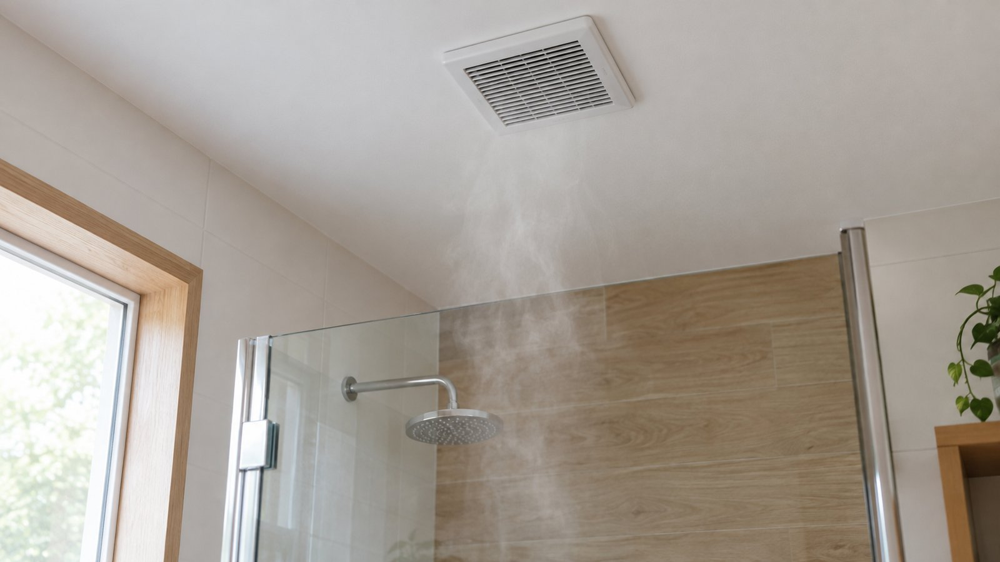
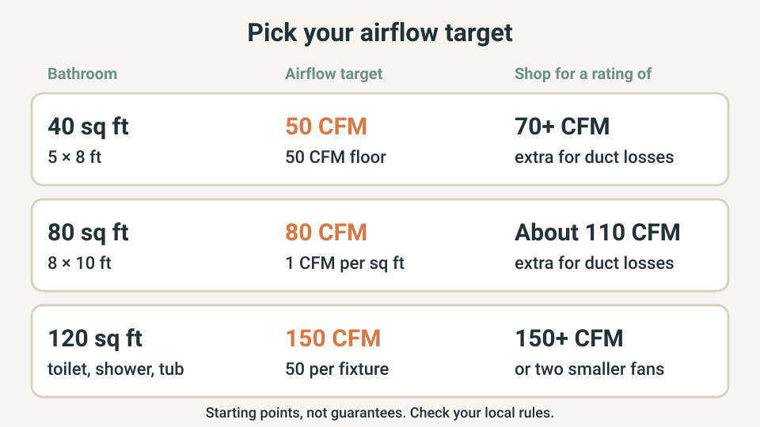
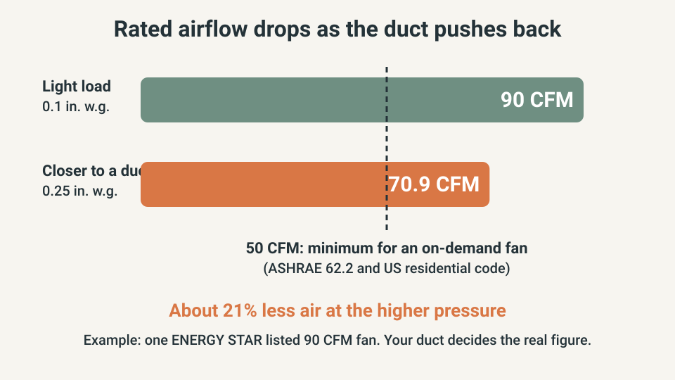
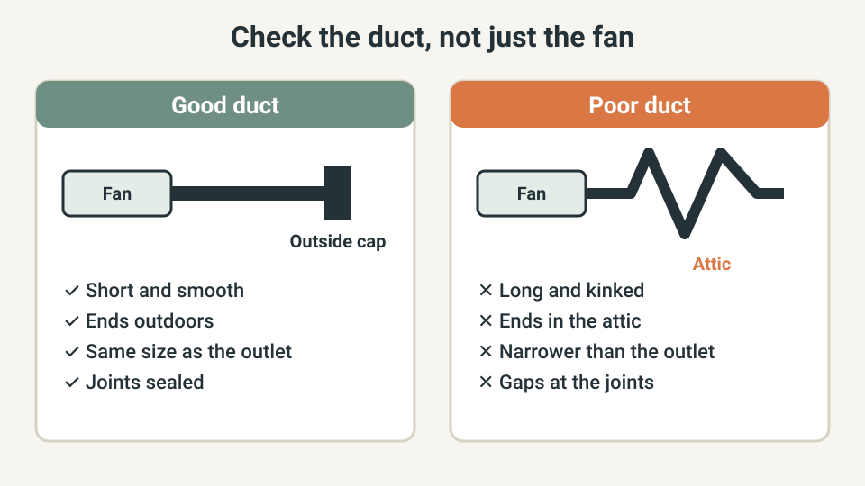

WEEKEND PROJECTS · BATHROOM VENTILATION
How to Choose a Bathroom Exhaust Fan: CFM, Noise and Duct Size

A fan can look right on the box and still leave the mirror fogged. The headline airflow is measured with almost no duct resistance, while your ceiling has a duct, bends and an outside cap. And a fan that roars gets switched off.
This guide covers the airflow you need, how to read the label and what to check in the duct before you buy. For fixing a fogged mirror, see the condensation guide.
The quick answer
- Your target is the bathroom’s square footage (up to 100 sq ft), but never below 50 CFM for a fan you switch on and off.
- Buy a fan rated well above the target. ENERGY STAR advises at least 70 CFM when you need 50.
- Compare airflow at 0.25 in. w.g. when the spec sheet lists it. That figure is closer to a real duct than the headline number.
- Noise: aim for 1 sone or less if the fan will run for long periods. ENERGY STAR certified bathroom fans stay at 2.0 sones or less.
- The duct must end outdoors, be short and smooth, and not be narrower than the fan’s outlet.
- Wiring is mains work. Switch the power off at the breaker, and call an electrician if anything is more than a like-for-like swap.
I am not an electrician or a builder. This is a planning guide built from the sources listed at the end. Follow the fan maker’s instructions and your local rules.
Quick plan
| Item | Detail |
|---|---|
| Time | About 30 minutes to measure and choose a fan. Fitting depends on your ceiling, duct and wiring |
| Cost | US retail listings seen while researching this guide ran from roughly $55 to $195 for fans in the 50 to 120 CFM range. Installation is extra |
| Best for | Replacing a loud or weak fan, fitting a first fan, or a bathroom where the mirror stays fogged long after the shower |
| Goal | A fan that clears moisture within about 20 minutes, quietly enough that people keep using it |
Step 1: Find the airflow (CFM) you need
CFM means cubic feet per minute, the volume of air the fan moves. HVI’s rule of thumb is 1 CFM per square foot for bathrooms up to 100 square feet. For larger bathrooms HVI adds 50 CFM for each toilet, shower and tub, and 100 CFM for a jetted tub. The US residential code and ASHRAE 62.2 set a separate floor: at least 50 CFM for a fan you switch on and off, or 20 CFM for a fan that runs continuously.
Use the larger of the two numbers as your target. Then add headroom for the duct. The Building America Solution Center reports that ENERGY STAR recommends a fan rated at least 70 CFM when you need 50, a ratio of 1.4. The table below scales that ratio to other sizes as a rule of thumb. That scaling is my estimate, not a published figure.

| Bathroom | Airflow target | Shop for a fan rated |
|---|---|---|
| 5 × 8 ft (40 sq ft) | 50 CFM (HVI gives 40, the 50 CFM floor is higher) | 70 CFM or more |
| 8 × 10 ft (80 sq ft) | 80 CFM (1 CFM per sq ft) | About 110 CFM |
| 10 × 12 ft (120 sq ft) with toilet, shower and tub | 150 CFM (50 for each of the three fixtures) | One fan of 150 CFM or more, or two smaller fans: one over the shower or tub, one near the toilet |
Step 2: Read the label: airflow, static pressure and sones
A spec sheet lists airflow at a stated static pressure, measured in inches of water gauge (in. w.g.). Static pressure is the resistance the air meets in the duct. The headline number is usually rated at 0.1 in. w.g., a light load. ENERGY STAR also requires certified bathroom fans to report airflow at 0.25 in. w.g., and California’s duct table rates fans at that same pressure. Use the 0.25 figure when you can find it.

The example in the chart is a real listing: one ENERGY STAR certified model rated 90 CFM at the light load lists 70.9 CFM at 0.25 in. w.g., about 21% lower. A fan whose headline number just meets your target will fall short once it is ducted.
- Sones measure loudness, and lower is quieter. ASHRAE 62.2 asks for 3 sones or less on a fan you switch on and off, and 1 sone or less on a continuous fan. ENERGY STAR caps certified bathroom fans from 10 to 200 CFM at 2.0 sones.
- ENERGY STAR: certified ventilation fans use about 48% less energy than standard models, according to ENERGY STAR. It matters most for a fan that runs for hours.
- Rated for continuous operation: look for it on the spec sheet if you want the fan to run all day. Not every fan is built for it.
Step 3: Check the duct before you buy the fan
The duct decides how much of the rated airflow you get. Look into the attic or ceiling space, or at the outside wall, before you choose the model.

- It must end outdoors. The Building America Solution Center says to vent bathroom fans directly outside, not into an attic, crawl space or the space between floors. With the fan running, check the outside cap: the flap should open and air should move out.
- Match the outlet size. The same source says the duct should be the diameter the fan maker specifies, ideally the same as the fan’s outlet.
- Keep it short, smooth and taut. Avoid kinks and sharp 90-degree turns. Seal the joints to the fan and between sections.
Flexible duct costs airflow. California’s energy code publishes minimum duct sizes by fan rating at 0.25 in. w.g., and the flexible-duct column asks for a larger duct than rigid at some ratings.
| Fan airflow rating at 0.25 in. w.g. | Minimum rigid duct | Minimum flexible duct |
|---|---|---|
| Up to 50 CFM | 4 in. | 4 in. |
| Up to 80 CFM | 5 in. | 5 in. |
| Up to 100 CFM | 5 in. | 6 in. |
| Up to 125 CFM | 6 in. | 6 in. |
Source: California Energy Commission, Title 24, Part 6, prescriptive duct sizing table. It applies in California and assumes flexible duct is fully stretched with gentle bends. Treat it as a useful yardstick elsewhere, and follow your fan’s manual. If the table calls for a bigger duct than the fan’s outlet, pick a fan with a lower airflow rating or ask a professional to assess the run.
Step 4: Pick the features worth paying for
| Feature | Worth it when | Skip it when |
|---|---|---|
| Low sone rating | You will run the fan for long periods, or the bathroom is next to a bedroom | You only need a quick extractor for a small guest bathroom |
| Timer or run-on control | The fogged mirror lasts after you leave the shower, so the fan needs to run about 20 minutes more | The fan already clears the room before you finish drying |
| Humidity sensor | Several people use the bathroom and nobody remembers to switch the fan on or off. See section 9 of the condensation guide for how a sensor should decide | You live alone and use a timer reliably |
| Rated for continuous running | You want a low background airflow all day | You prefer to run it only after showers |
| Built-in light | You are replacing a fan and a light and want one opening in the ceiling | The light adds cost and you already have good lighting |
If your problem is a damp towel smell rather than a weak fan, check how to stop bathroom towels smelling musty first.
Step 5: Swap it yourself or call a professional
Replacing a fan with a similar one is the easiest case. Power and ceiling work raise the stakes, so be honest about where your skills stop.
- Switch the circuit off at the breaker and confirm the fan is dead before you touch any wire.
- Measure the ceiling opening and the housing. Choose a replacement made for the same opening, so you do not have to cut a new hole.
- Check the duct. If the old fan blows into the attic, solving that comes first, as in Step 3.
- Read the label for where the fan may be installed. Some fans are listed for use over a tub or shower only on a GFCI-protected circuit, so follow the manual.
- Connect the new fan as the maker’s instructions show, seal the duct joints, and test the airflow and the outside cap.
Call a professional for new wiring, a new hole in the ceiling, roof or wall, a duct run that must be rerouted, or any doubt about the circuit. Renters should ask the landlord before changing a fan.
What not to buy yet
- A bigger fan to fix a bad duct. The duct limits what a fan can deliver.
- A fan chosen on the headline CFM alone, with no airflow figure at 0.25 in. w.g. and no sone rating.
- A smart humidity controller before you have checked that the fan moves air outdoors.
- A fan of unknown loudness. A fan that sounds unpleasant tends to get switched off.
Quick win (10 minutes)
Measure the bathroom, work out your airflow target from Step 1 and write it down. Then switch the fan on, go outside and look at the vent cap. If the flap does not open or no air comes out, the problem is the duct or the cap, and a new fan will not fix it.
Common mistakes
- Buying on the headline CFM and ignoring the duct.
- Choosing a fan with a lower airflow than the target because it is cheaper.
- Leaving the duct blowing into the attic or ceiling space.
- Running long lengths of flexible duct with kinks or sags.
- Squeezing a 4-inch outlet into a 3-inch duct.
- Ignoring the noise rating, then never using the fan.
- Working on the wiring with the power on.
US, UK and EU: the numbers differ
The figures above are US standards. In England, Approved Document F sets a minimum extract rate of 15 litres per second for an intermittent bathroom fan, about 32 CFM, and tells installers to measure the airflow of each installed fan. UK and EU fans are usually quoted in litres per second, and the rules for electrical work near a bath or shower differ. Use the standards and a qualified electrician for your country.
Frequently asked questions
What CFM bathroom fan do I need?
Start with the bathroom’s floor area in square feet for bathrooms up to 100 square feet, which is HVI’s rule of thumb, and treat 50 CFM as the floor for a fan you switch on and off, the figure used by ASHRAE 62.2 and the US residential code. Then choose a fan rated well above that number, because a real duct slows the air. ENERGY STAR advises a fan rated at least 70 CFM for a 50 CFM need.
Is a higher CFM always better?
No. A bigger fan costs more, is usually louder, and the duct may not let it move the extra air anyway. Pick the airflow your bathroom needs, then spend the rest of the budget on a quiet fan and a short, smooth duct.
Can I vent a bathroom fan into the attic?
No. The Building America Solution Center says to vent bathroom fans directly outdoors, not into an attic, crawl space or the space between floors. Moist air released there can cause mold and rot, so fix any fan that ends in the attic before you buy a new one.
Should my bathroom fan run all the time?
It can, if the fan is rated for continuous operation. ASHRAE 62.2 accepts either 50 CFM on demand or 20 CFM continuously, and it asks for 1 sone or less for a continuous fan, against 3 sones or less for an on-demand one. Many people keep a quiet fan on a timer or humidity control instead.
Can I replace a bathroom fan myself?
A like-for-like swap on an existing circuit, with the power off at the breaker and the same duct, is a reasonable job for a confident DIYer. New wiring, a new hole in the ceiling or roof, or a duct that does not reach the outdoors are jobs for a professional. Rules differ by country, so check local requirements.
Keep going
- How to reduce bathroom condensation
- How to stop bathroom towels smelling musty
- Macerating toilet for a basement bathroom: what to know first
Sources and further reading
Last reviewed: October 25, 2026. Ratings and prices change by market, so check the current figures for your country.
- Building America Solution Center: Bathroom Exhaust Fans
- ENERGY STAR: Ventilation Fans Key Product Criteria
- ENERGY STAR Product Finder: example listing used in the airflow chart
- HVI: Bathroom ventilation guidelines
- California Energy Commission: Title 24, Part 6, ventilation and duct sizing tables
- UK Government: Approved Document F, Volume 1: Dwellings (2021)